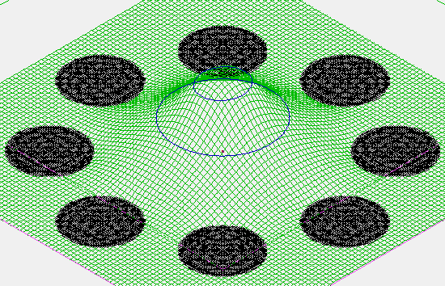

Purpose
This example demonstrates space-charge effects inside an RF octupole ion guide. It is based on Example: octupole but utilizes the Poisson solver (or, alternately, charge repulsion features) to evaluate space-charge effects.
Unlike most other Example: Poisson examples, this example utilizes RF fields (rather than static fields) with the Poisson solver. Generally speaking, RF fields will cause time-dependent space-charge, necessitating the "charge" mode in piclib. However, here we approximate the space-charge distribution in the RF octupole as approximately time-independent in order to utilize the "current" mode in piclib. The Poisson Solver in SIMION has additional comments on using the Poisson solver with RF fields.

Figure: PE surface of octupole at end of Fly'm. Note the bulge in potentials near center of trap where ions fly. Rods are shown here at 0 V so that the space-charge effect is easier to see.
Files in this demo:
- octupole.* - RF octupole space-charge example files
- octupole-charge.gem - GEM file used to create initial empty space-charge PA.
- octupole_coulombic.fly2 - alternate particle definitions when using charge repulsion methods instead of the Poisson solver
Usage
How to run this demo:
- 1. View octupole.iob. (Click View on main screen and select the octupole.iob file.) You may be asked to refine (confirm that and press Refine).
- 2. Fly ions. (Click Fly'm.) (Note: you may change T.Qual on the Particles tab from +3 to 0 to speed up the simulation.) Notice that contour lines show a bulge in potential near the center of the trap where the ions are. This is due to the space charge of the ions. The magnitude of the bulge is on the order of a fraction of a volt, which is relatively small but going much above this will hinder trapping.
- 3. Increase the A_per_mm_per_particle variable by a factor of 10 (on the Variables tab) and Fly ions again. Notice that the space-charge is much more repulsive and particles hit the rods. In fact, the particle trajectories are not converging between reruns but rather oscillating, so the results cannot be relied on in a quantitative fashion. The oscillations can be reduced somewhat by slowly ramping up the current level between reruns such as by setting PIC_current_ratio_start = 0.2, PIC_current_ratio_step = 0.1 and PIC_iterations = 20, but even this is not sufficient. High current levels in this system might just not be very stable.
- 4. Now lets compare using the traditional charge repulsion methods. We'll use the Coulomb repulsion method because the beam repulsion method is not very suitable for RF currents since RF prevents narrow, space-coherent beams. First disable PIC (set PIC_enable = 0 on the Variables tab). It's important that the Poisson and charge repulsion methods are not both being used simultaneously because this would not be meaningful (piclib will raise an error if you even attempt this). Load the octupole_coulombic.fly2. Notice that the time-of-birth (TOB) range in the particle definitions is 30 microseconds. To achieve a 0.02 microamp current as before, we will need (0.02E-6 A)*(30E-6 s) = 0.6E-12 C. Therefore, on the Particles tab, enable Grouped flying and the Coulomb repulsion method and set the repulsion value next to it to 0.6E-12 C. Fly ions. Compare also the results when the repulsion amount is increased by a factor of 10. Note the similarities, roughly speaking, with the Poisson solver results seen before.
Comments
There are three ways space-charge might be handled in an RF octupople like this example:
-
The approach taken in this example is to assume as a simplification that the
space-charge is time-independent (i.e. "current" mode in piclib.lua).
Obviously, it is not, due to the RF, but as a simplification we might
assume it is.
Under this simplification, we can do an entire flight of ions through
the system in the usual way, compute the space-charge distribution
from those entire trajectories (assuming each trajectory holds a
certain "current"), and then re-invoke Refine
(Poisson solver)
given that space-charge distribution.
This process can be repeated a number of times (as SIMION reruns)
until the results converge.
This process only requires less than 10 refines, which don't need
to be done from scratch, so it is still fairly efficient.
Note that in
octupole.lua, theinitialize_runsegment indirectly invokes Refine, theother_actionssegment updates the space-charge density PA during the trajectory integrations, and reruns are enabled. (These details might not be obvious by merely looking at "octupole.lua" because the details are abstracted away in "piclib.lua" library, which the user doesn't need to bother with.) - A technically more accurate way to do this simulation is to invoke refine every time the space-charge distribution changes significantly. This is not done here but could be done by enabling "charge mode" in piclib.lua. In this case, each particle in time would represent a certain charge. For an RF field, this might require multiple refines per RF cycle, unless the particle don't move far in an RF cycle. This might not be practical due to Refine times. However, it may be necessary in things like ICR simulations, where I've seen approaches like it done on powerful computers. There may also be optimizations.
- Yet another way to simulate this is of course with the SIMION 7.0 style charge repulsion features. This allows space-charge to be time-dependent. It remains relatively efficient because it assumes space-charges don't perturb electrode surface charges, so it never re-invokes Refine. This assumption may or may not hold. This method also slows down if there is a large number of ions (e.g. thousands or millions), but if that is a problem there is a way to accelerate it using an O(N log N) rather than O(N^2) algorithm for N-body charge repulsion implemented in Lua, as well as implementing that N-body in CUDA [1-3].
In this "octupole_sc" example, both #1 and #3 are compared, and the results for the two seemed fairly similar on quick examination.
See Also
- Example: Poisson
- Example: Octupole - basic RF octupole example without space-charge. This example is based on that.
- [1]. K. Saito, P. T.A. Reilly, E. Koizumi, H. Koizumi. A Hybrid Approach to Calculating Coulombic Interactions: An Effective and Efficient Method for Simulations Ion Storage Device with SIMION. ASMS2012 poster (summary). http://www.asms.org/portals/0/Abstracts2012/ASMS20127766.9674VER.1.pdf
- [2] K. Saito, P. T.A. Reilly, E. Koizumi, H. Koizumi, A hybrid approach to calculating Coulombic interactions: An effective and efficient method for optimization of simulations of many ions in quadrupole ion storage device with SIMION, Int. J. Mass Spectrum, 315 (2012) 74-80
- [3] K. Saito, E. Koizumi, H. Koizumi, Application of Parallel Hybrid Algorithm in Massively Parallel GPGPU -- the Improved Effective and Efficient Method for Calculating Coulombic Interactions in Simulations of Many Ions with SIMION (Submitted to JASMS)
Source
Author: D.Manura, 2011-12.